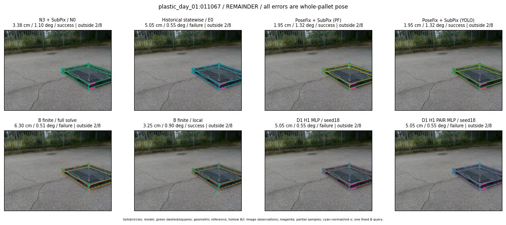

Whole-pallet pose errors; reference is a fixed geometric annotation, not certified physical GT.

Scores are uncalibrated logits. N0 retention is a numerical pose alias; it differs from H0 none or B fallback. B/I and profiles in baseline/B panels are original observations; L panels use new D1 observations. Only one deterministic supported B query is shown in a thumbnail; full support counts are below. Grey privacy rectangles edit the display copy only and are unrelated to O states; all observations were measured on original pixels. Thumbnails use JPEG quality85; detailed scientific panels are PNG.
| Method | Whole pose / cm, deg | Actual source | Selected ID | Score | Archived candidates | Eligible | N0 retained | H0 none | Fallback | Finite profiles |
|---|---|---|---|---|---|---|---|---|---|---|
| Raw YOLO + F | 3.22 cm / 0.92 deg / success | OTHER | None | N/A | N/A | N/A | False | N/A | None | N/A |
| N3 + SubPix / N0 | 3.38 cm / 1.10 deg / success | N0 | None | N/A | N/A | N/A | True | N/A | None | N/A |
| Historical statewise / E0 | 5.05 cm / 0.55 deg / failure | E0_REGENERATED | None | N/A | N/A | N/A | False | N/A | False | N/A |
| PoseFix raw | 1.63 cm / 0.79 deg / success | OTHER | None | N/A | N/A | N/A | False | N/A | None | N/A |
| PoseFix + SubPix (PF) | 1.95 cm / 1.32 deg / success | OTHER | None | N/A | N/A | N/A | False | N/A | False | historical support records 9; finite audit N/A |
| PoseFix + SubPix (YOLO) | 1.95 cm / 1.32 deg / success | OTHER | None | N/A | N/A | N/A | False | N/A | False | historical support records 9; finite audit N/A |
| Historical L, seed18 | 5.05 cm / 0.55 deg / failure | OTHER | NEW/A/SWAPPED_WD/h3/G10/ORIGINAL_WD/sample/4/PROPOSED_NATIVE_YAW_3 | N/A | 59 | 57 | False | False | False | N/A |
| Historical B fixed bank | 5.05 cm / 0.55 deg / failure | E0_REGENERATED | G13/ORIGINAL_WD/sample/0 | N/A | N/A | N/A | False | N/A | False | N/A |
| Historical B full | 6.27 cm / 0.48 deg / failure | OTHER | NEW/B/ORIGINAL_WD/h0/G13/ORIGINAL_WD/sample/0/PROPOSED_NATIVE_YAW_0 | N/A | N/A | N/A | False | N/A | False | N/A |
| Historical edge full | 4.88 cm / 0.44 deg / success | OTHER | NEW/edge/ORIGINAL_WD/h0/G13/ORIGINAL_WD/sample/0/PROPOSED_NATIVE_YAW_0 | N/A | N/A | N/A | False | N/A | False | N/A |
| Historical AB full | 6.22 cm / 0.48 deg / failure | OTHER | NEW/AB/ORIGINAL_WD/h0/G13/ORIGINAL_WD/sample/0/PROPOSED_NATIVE_YAW_0 | N/A | N/A | N/A | False | N/A | False | N/A |
| B finite / fixed bank | 5.05 cm / 0.55 deg / failure | E0_REGENERATED | G13/ORIGINAL_WD/sample/0 | N/A | N/A | N/A | False | N/A | False | 25/25 |
| B finite / full solve | 6.30 cm / 0.51 deg / failure | OTHER | NEW_FINITE/B/ORIGINAL_WD/h0/G13/ORIGINAL_WD/sample/0/PROPOSED_NATIVE_YAW_0 | N/A | N/A | N/A | False | N/A | False | 25/25 |
| B finite / local | 3.25 cm / 0.90 deg / success | OTHER | NEW_FINITE/B/ORIGINAL_WD/h0/N0_LOCAL_SAME_PHYSICAL_POSE/ORIGINAL_WD | N/A | N/A | N/A | False | N/A | False | 25/25 |
| Edge finite / full solve | 4.88 cm / 0.44 deg / success | OTHER | NEW_FINITE/edge/ORIGINAL_WD/h0/G13/ORIGINAL_WD/sample/0/PROPOSED_NATIVE_YAW_0 | N/A | N/A | N/A | False | N/A | False | 25/25 |
| D0 H0 MLP / seed18 | 3.38 cm / 1.10 deg / success | N0 | N0 | 3.537569046020508 | 26 | 24 | True | True | True | N/A |
| D0 H0 MLP / seed19 | 3.38 cm / 1.10 deg / success | N0 | N0 | 3.9616665840148926 | 26 | 24 | True | True | True | N/A |
| D0 H0 MLP / seed20 | 3.38 cm / 1.10 deg / success | N0 | N0 | 1.2884265184402466 | 26 | 24 | True | True | True | N/A |
| D0 H1 MLP / seed18 | 5.05 cm / 0.55 deg / failure | E0_REGENERATED | E0_REGENERATED | 0.1490737795829773 | 26 | 24 | False | False | False | N/A |
| D0 H1 MLP / seed19 | 5.05 cm / 0.55 deg / failure | E0_REGENERATED | E0_REGENERATED | -0.2486380934715271 | 26 | 24 | False | False | False | N/A |
| D0 H1 MLP / seed20 | 5.05 cm / 0.55 deg / failure | E0_REGENERATED | E0_REGENERATED | -0.796731173992157 | 26 | 24 | False | False | False | N/A |
| D1 H0 MLP / seed18 | 3.38 cm / 1.10 deg / success | N0 | N0 | 8.076254844665527 | 26 | 24 | True | True | True | N/A |
| D1 H0 MLP / seed19 | 3.38 cm / 1.10 deg / success | N0 | N0 | 7.616459369659424 | 26 | 24 | True | True | True | N/A |
| D1 H0 MLP / seed20 | 3.38 cm / 1.10 deg / success | N0 | N0 | 7.175047397613525 | 26 | 24 | True | True | True | N/A |
| D1 H1 MLP / seed18 | 5.05 cm / 0.55 deg / failure | E0_REGENERATED | E0_REGENERATED | 1.1633456945419312 | 26 | 24 | False | False | False | N/A |
| D1 H1 MLP / seed19 | 5.05 cm / 0.55 deg / failure | E0_REGENERATED | E0_REGENERATED | 0.7248533964157104 | 26 | 24 | False | False | False | N/A |
| D1 H1 MLP / seed20 | 5.05 cm / 0.55 deg / failure | E0_REGENERATED | E0_REGENERATED | 1.0584646463394165 | 26 | 24 | False | False | False | N/A |
| D1 H1 ROLE AFFINE / seed18 | 5.05 cm / 0.55 deg / failure | E0_REGENERATED | E0_REGENERATED | 1.2310473918914795 | 26 | 24 | False | False | False | N/A |
| D1 H1 ROLE AFFINE / seed19 | 3.38 cm / 1.10 deg / success | N0 | N0 | 0.2535737454891205 | 26 | 24 | True | False | False | N/A |
| D1 H1 ROLE AFFINE / seed20 | 5.05 cm / 0.55 deg / failure | E0_REGENERATED | E0_REGENERATED | 0.9007235765457153 | 26 | 24 | False | False | False | N/A |
| D1 H1 PAIR MLP / seed18 | 5.05 cm / 0.55 deg / failure | E0_REGENERATED | E0_REGENERATED | -0.7073034644126892 | 26 | 2 | False | False | False | N/A |
| D1 H1 PAIR MLP / seed19 | 5.05 cm / 0.55 deg / failure | E0_REGENERATED | E0_REGENERATED | -0.46135663986206055 | 26 | 2 | False | False | False | N/A |
| D1 H1 PAIR MLP / seed20 | 5.05 cm / 0.55 deg / failure | E0_REGENERATED | E0_REGENERATED | 0.16945914924144745 | 26 | 2 | False | False | False | N/A |
| D1 H1 PAIR ROLE AFFINE / seed18 | 5.05 cm / 0.55 deg / failure | E0_REGENERATED | E0_REGENERATED | -0.12529198825359344 | 26 | 2 | False | False | False | N/A |
| D1 H1 PAIR ROLE AFFINE / seed19 | 3.38 cm / 1.10 deg / success | N0 | N0 | -0.1720181107521057 | 26 | 2 | True | False | False | N/A |
| D1 H1 PAIR ROLE AFFINE / seed20 | 3.38 cm / 1.10 deg / success | N0 | N0 | -0.21875908970832825 | 26 | 2 | True | False | False | N/A |
| Regenerated common E0 | 5.05 cm / 0.55 deg / failure | E0_REGENERATED | E0_REGENERATED | N/A | N/A | N/A | False | N/A | False | N/A |